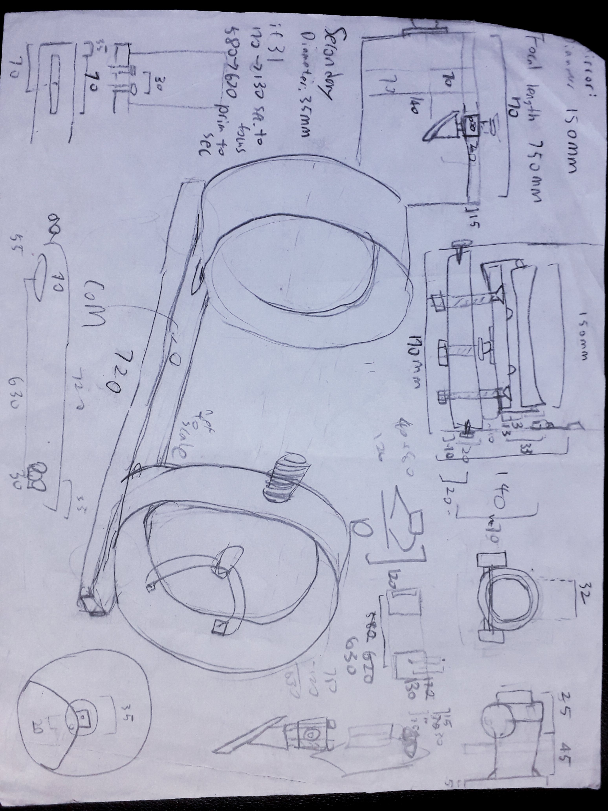
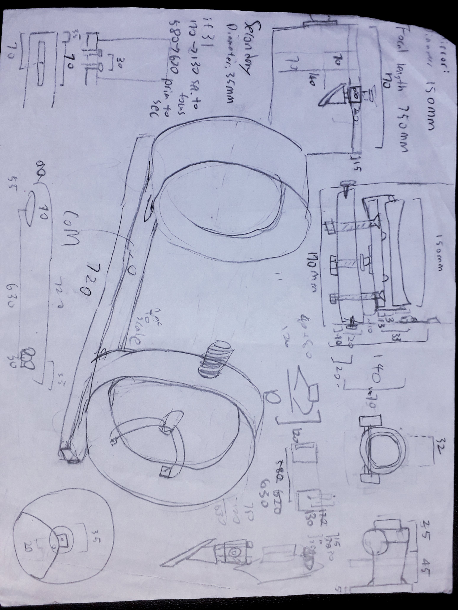
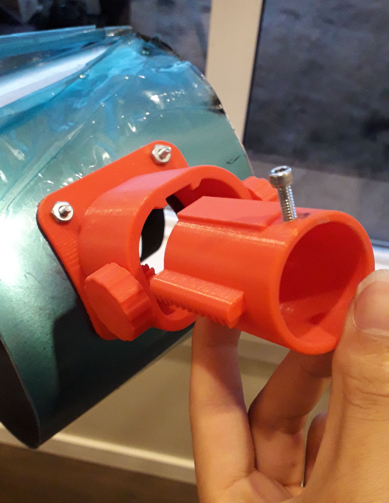
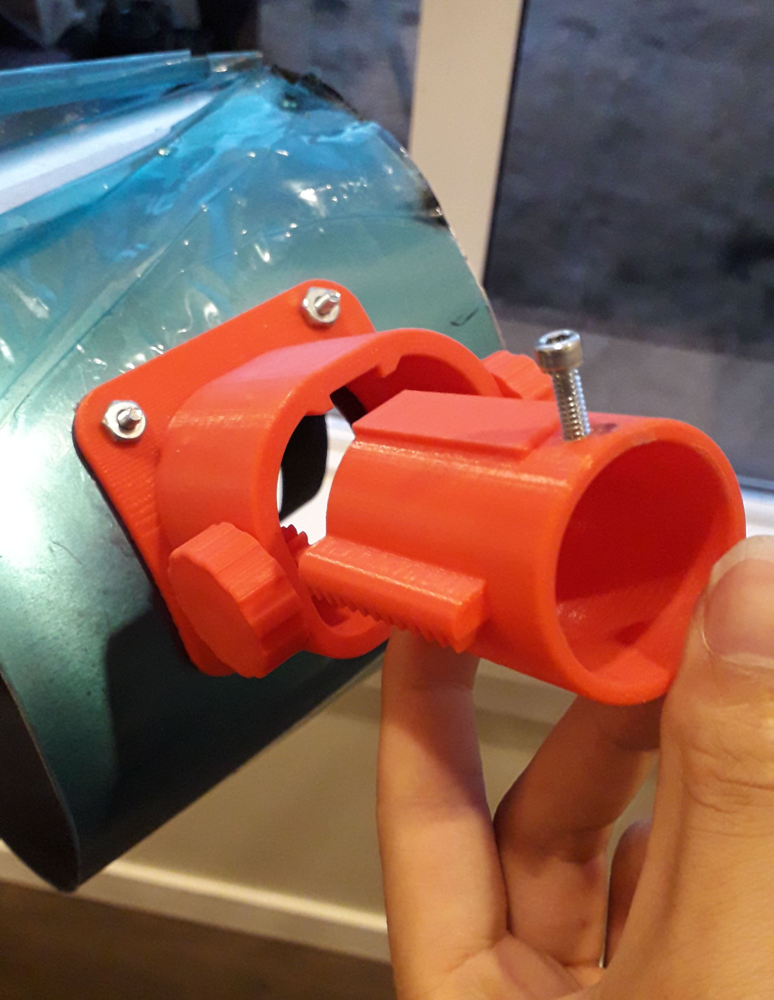

Home Made Telescope
2020-08-16

I needed a project for metalwork class, so I made a telescope. I've actually made one some years back with Prof. Wu Jiun-Huei's Telescope DIY Camp, although that was basically putting together pre-made materials from an existing design. This time, I want to do the designs and size calculation.
Since it's for metalwork class, the telescope would be made from metal. After some browsing around the internet, I found this design by Gary Seronik. The design looks pretty neat, so I'm basing mine off from his. Although this design only have a 4 1/2" primary mirror, and my previous telescope is a 114mm already, so I figured might as well make a bigger one this time. After some calculation on paper and looking at a measuring tape (so I actually know how long 1 meter is in real life), I decided to make a telescope with an aperature of 150mm and focal length of 750mm. Newt for the Web and Diagonal Off-Axis Illumination Calculator was also very helpful for calculation.
 


The structure of the telescope is pretty simple. Rolling two pieces of aluminum sheet and holding them with rivets creates the tubes on the end, connected with an L shaped aluminum bar. Primary and seconday mirror holder are also based on Seronik's design, I made them with CNC machine and 3D printer.


Since I've never grinded a mirror myself, and I don't have tools for that, I bought them on AgenaAstro - a GSO 6" f/5 primary and a 50mm seconday. And I got some eye pieces from Taobao.
Making the focuser took me longer. I originally wanted to use 3D printer to print a folding focuser. But my first design wiggles too much, and the knob couldn't even move the focuser. Plus, a pandemic just happened and shut down the school, so no more 3D printing for me to make an updated version. Didn't find much materials to make a simple Crayford focuser at home either, so ended up using a pipe adapter as a focuser. Works good enough.


08/20 Update:
Found some pipes to make a Crayford focuser, not too bad.

2021/7/13 Update:
I got a new Creality Ender-3 Pro 3D printer, so I spent some time designing a new focuser for the telescope.
It was designed in Solidworks, but the license from school expire midway through I was basically locked out from my own files. I had to remote desktop into school's computer to finish it… I think I'll try to avoid using these expensive programs in the future.
 

Collimation was done using eye balls - if it looks aligned, it is aligned. The primary mirror can be adjusted with a few knobs, the curved spider holding the secondary are adjusted by bending it by hand, then screws for finer adjustment. When doing that, I found that I made the secondary holder too long, so I had to cut of like half a centimeter from the top.
Using this telescope feels pretty good. I only have plastic tripods, so things are a little bit shaky. And it gets affected by local light sources a lot since there's nothing in its middle secion. But looking at Saturn, Jupiter, Moon, etc, is pretty clear. It's brighter and has a wider field of view compared to my old one. Taking a picture is kind of annoying, though. I tried to attach a webcam to the focuser for pictures, but I didn't like the result. Then I discovered this phone eye piece mount thing, so I made one myself so I can take pictures with my phone.

Here are some photos I got. Got a lot of light pollution near my house, plus my phone is not a professional camera, so I only took pictures of bright, intra solar system objects. I used video recording and gathered hundreds to a couple thousand frames, then used PIPP => Autostakkert => RegiStax => GIMP to do stacking, colour balance, and sharpening. Still a noob so the results are crappy (and I think I didn't set the camera app to the highest resolution). At least you can tell which objects are in the pictures. When looking through the telescope directly though, I could see a lot of stars that aren't visible to naked eyes. Andromeda galaxy was very faint, Neowise was brighter than it.

To conclude: making a telescope is fun, I'll see if I can make an automatic tracking mount for it in the future.